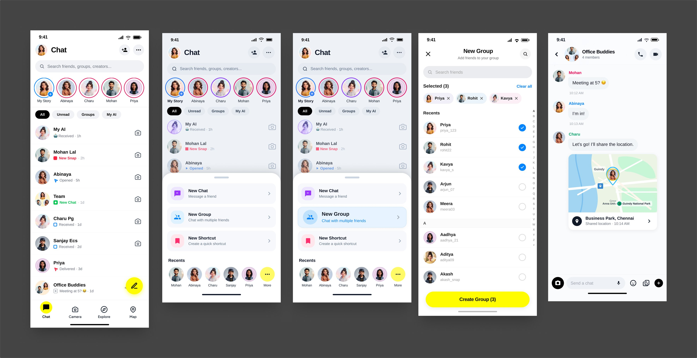

STORY 01
Create a new group / discovery.
A social entry point that helps people move from seeing friends to starting a shared conversation.

Design intentMake group creation feel like a natural continuation of the social graph.
User valueLess friction between discovering people and acting on that relationship.